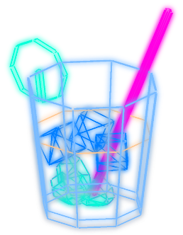
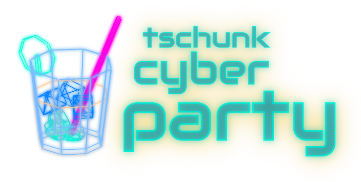
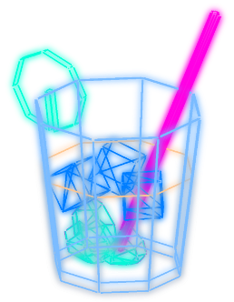
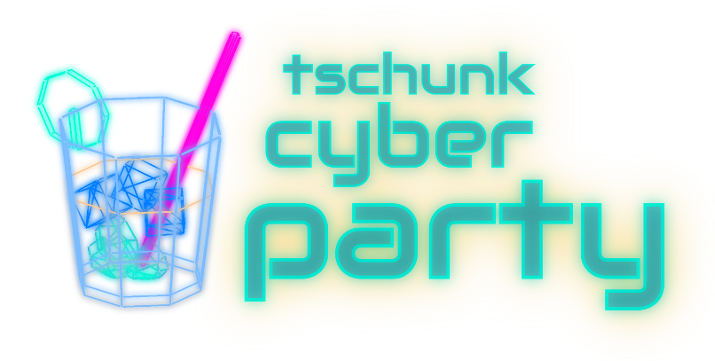

TCP/2017
tschunk cyber party
Was?
#zaunei2017 — die Tschunk Cyber Party:Nach der #zaunei2016 folgt nun die neue, abgecyberte Version der beliebten Party!
Mit Musik von CouchSofa.
Und mit Noms von ak7ways.
Außerdem mit Tschunk gemixt von Zaunei persönlich.
Wann?
14.10.2017 ab 16:00Wo?
In den Räumen von Chaos inKL.Anmeldung?
Vorherige Anmeldung hilft und beim planen.Der Eintritt zur #zaunei2017 ist frei.
Eine Spende in Höhe von 5€ wird empfohlen.
Impressum